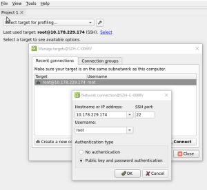
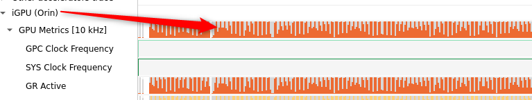

How to use NSYS to profiling standard application performance
background
It is confirmed with NV that only the detailed reasoning information of the GPU can be used under the Standard to use NSYS, and the NSYS report can be used to clear the details of the GPU RUN.
Before we completed the code of code of Standard & Safety and only use the Safety model.
Compile
Stranged & Bottom Soft
Terrace IP 10.178.229.174
It can be troublesome to integrate colleagues LAN Feifei to help CCPLEX and MCU. The latest date is 01111
The brush is the same as SafeTy
ASW branch
Yin Micheal temporarily maintains a set of root software that can pass the Standard Compile. The branch is feature/CNWVIII-78998-planning-standard-build-set-up
ASW Base package with good compiles \\ bosch.com\dfsrb\DfsCN\DIV\XC\Engineering\domain\WAVE3\04_PER\08_ENG\nsys_report\WAVE3-ASW-feature_CNWVIII-78998-planning-standard-build-set-up-202401171054CST-Chery_Camera_Debug.zip
It is recommended to use the one-flow method of compile viprparking of the Activity, and copy it to replace the test (the library file is also replaced by the test)
Compile instruction
Propose Feature/CNWVIII-78998-Planning-Standard-Build-SET-UP branch updates the sub-branch of Perception
how to one-flow-build perception project with pj-w3-root - PJ-W3-PER - Docupedia (bosch.com)
Compile Viperparking instruction
./root_build.sh -o qnx -d B_Sample_L2++/DualOrinMaster -b asw/perception/parking -r OFF -m ON -V chery -j`nproc`
run
Sample configuration nsys
The configuration of the NSYS environment in our board also needs to modify the soft configuration, and run the script in the board (you need to run every time you restart)
\\bosch.com\dfsrb\DfsCN\DIV\XC\Engineering\domain\WAVE3\04_PER\08_ENG\nsys_report\nsys_setup.sh
Host PC (ubuntu) install NSYS
The NSYS version required by DriveOS607 is NSIGHTSYSTEMS-linux-NDA-2023.2.57-3275478.deb. You only need to install it once
\\bosch.com\dfsrb\DfsCN\DIV\XC\Engineering\domain\WAVE3\04_PER\08_ENG\nsys_report
dpkg -i NsightSystems-linux-nda-2023.2.2.57-3275478.debMOBA-XTERM can start the X11 service and start it directly (every time the board is restarted)
 Be sure to connect to go to the board to grab nsys, as long as there are errors, it will not succeed.
Manually modify running software ESME JSON
Since Driving is not adapted, you need to modify ESME JSON, and only run Parking
You can replace the dualorinmaster_esme_local.json in the board/data/esme in the board, DualOrinMaster_esme_local_parking_noviper.json
Manual NSYS startup process
Enter the Run directory, manually activate some environmental variables
cd /cache/update/outputexport ASW_PATH=/cache/update/output/export LD_LIBRARY_PATH=${ASW_PATH}lib_w3:${ASW_PATH}lib_w3/planning:${ASW_PATH}lib_w3/perception:${ASW_PATH}lib_w3/hdmap/lib:${ASW_PATH}lib_aos:${ASW_PATH}lib:/opt/vrte/lib:/opt/app/lib:${LD_LIBRARY_PATH} \export ASW_PATH=${ASW_PATH} \export MALLOC_LOCK_RETRY=0\export OPENCV_FOR_THREADS_NUM=3\export AI_DATA_ROOT=${ASW_PATH}/data/ \export PNC_DATA_ROOT=${ASW_PATH}/data/ \export RUNNABLES_DLA_LAZY_INIT=1\export VIPER_NON_CRITICAL_XLOC=1\export GLOG_minloglevel=3\export POSIX_TYPED_MEMORY=/memory/pcie6Memory \export DLT_PIPE_DIR=/data/ \export ENABLE_NP=ON \export TIMETRIGGER_MS=10\export DISABLE_INTROSPECTION=ON \export DISABLE_NOTIFY_WAIT_TICK_ERROR=ON \export DISABLE_ALIVE_CHECK=ON \export CUDA_CACHE_PATH=/data/ \export CUDA_DEVICE_MAX_CONNECTIONS=16*
Use the command line NSYS to start VIPERPARKING
-O/Cache/Update/Madcszh/Standard/NSYSLOG-VIPER%P follows the path of the output report
/opt/nvidia/nsight_systems/nsys profile -y100-d30-wtrue-t"cuda,cudnn,osrt,nvtx,nvmedia,cublas"-o /cache/update/madcszh/standard/nsyslog-Viper%p \--gpu-metrics-frequency=10000--force-overwrite=true--cuda-graph-trace=node \--cuda-memory-usage=true--accelerator-trace=nvmedia --gpu-metrics-device=all --cudabacktrace=all --sampling-frequency=500\./bin/ViperParking_activity \-m ${ASW_PATH}yaaac_codegen/carma_0_22_deploy/DualOrinMaster/manifests/roudi_qm_viper_parking.inst \-d ${ASW_PATH}yaaac_codegen/carma_0_22_deploy/DualOrinMaster/manifests/viper_parking_deploy \-p ${ASW_PATH}yaaac_parameter_instances \-c VIPP \-l1-a6-s2-f /log/ASW/viper_parking
analyze
You can choose to install a Windows version or directly to the X11 on the Host PC, the Run nsys UI open the report to see the offline Analyze
Be sure to ensure that the corresponding content of the IGPU is really collected
